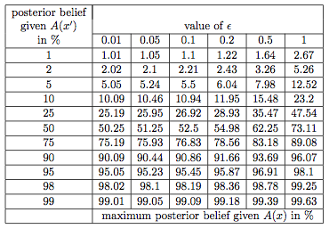

The following demonstrates a tool that helps data depositors release privacy preserving statistics describing a dataset, by distributing a privacy budget across different possible statistical calculations. This tool is called the budgeter. Users select which statistics they would like to calculate and are given estimates of how accurately each statistic can be computed. They can also redistribute their privacy budget according to which statistics they think are most valuable in their dataset.
Below is found a brief introduction to differential privacy, the mathematical framework that provides the privacy guarantees, and an overview of all the features and requirements of this tool. You can bring this explanatory page back at any point, by clicking any of the information buttons, marked .
Differential privacy is a rigorous mathematical framework for making statistical information about private datasets available. This is done in such a way that guarantees that information about specific individuals in the dataset does not leak out.
In the simplest setting, consider an algorithm that analyzes a dataset and computes statistics about it (such as the data's mean, variance, median, mode, etc.). Such an algorithm is said to be differentially private if by looking at the output, one cannot tell whether any individual's data was included in the original dataset or not. In other words, the guarantee of a differentially private algorithm is that its behavior hardly changes when a single individual joins or leaves the dataset -- anything the algorithm might output on a database containing some individual's information is almost as likely to have come from a database without that individual's information. Most notably, this guarantee holds for any individual and any dataset. Therefore, regardless of how eccentric any single individual's details are, and regardless of the details of anyone else in the database, the guarantee of differential privacy still holds. This gives a formal guarantee that individual-level information about participants in the database is not leaked.
The definition of differential privacy emerged from a long line of work applying algorithmic ideas to the study of privacy (Dinur and Nissim `03; Dwork and Nissim `04; Blum, Dwork, McSherry, and Nissim `05), culminating with work of Dwork, McSherry, Nissim, and Smith `06.
The level of privacy protection in differential privacy is governed by two parameters: epsilon (ε) and delta (δ). The smaller these numbers, the more privacy is guaranteed. However if these numbers are too small, the released statistics will become less accurate. We guide you through selecting these parameters below.
Typical epsilon values are in the regime of .01-1. This table gives some intuition about the effects of different choices of epsilon (top row).
Imagine an adversary has prior belief about the probability that you have some trait. These are listed in the vertical column on the left. If your data were in a dataset, the table shows the new belief that that adversary could infer from looking at differentially private statistics about the dataset with differing values of epsilon. For example, if an adversary had a prior belief of 10% that you have a particular trait, then outputs from a differentially private algorithm with epsilon set to .2 could update his belief to at most 11.95%.
Select an epsilon below. You will be able to change it later and see how it affects the accuracies of your statistics. We highly recommend that your epsilon does not exceed 1. Remember, the smaller the epsilon, the less accurate your statistics become.
In the worst case, delta is the probability that all information about the dataset is leaked. For this reason, delta is typically set to a very small number, such as the probability that somebody can break an encryption scheme. We recommend a delta of one in ten million or smaller.
For a given level of privacy protection, there are limits on how much statistical information can be released and how accurately. It is important to make judicious choices about how to use the limited budget that you have. The budgeter tool assists you in making those choices.
When using the tool you will select statistics to be released one by one. Begin by selecting the variable on which to compute a new statistic in the left panel. This will spawn a box in the center panel for that variable. Fill in the variable type (e.g. boolean, numerical, categorical) and then select the statistic from the options we currently support:
Mean: Computes the average value of the variable.
Histogram: Computes a bar graph of the different values represented in the variable. This is meant to be used with categorical variables, where values are labels and not to be interpreted as quantities. For example a religion variable will have a discrete set of values it can take on that are not numerical.
Quantile: This computes the full cumulative distribution function, or CDF, of the variable, which can then be used to calculate any desired quantile (e.g. the median or percentiles).
The privacy preserving algorithms to generate these statistics each require certain auxiliary information about the variables, which we refer to as metadata. Different statistics require different metadata. The tool will only ask for the metadata needed to complete the set of statistics presently chosen by the user. Here are the meanings of these metadata values:
Upper Bound: The largest value that this variable can take on. Any observations in the raw data beyond this value will be replaced with this bound (sometimes this is referred to as top-coding or censoring). For example, if the upper bound on age is entered as 100, and a person in the data had recorded age of 105, this observation would be overridden to the value of 100 for the calculation of any statistics.
Lower Bound: The smallest value that this variable can take on. Any observations in the raw data below this value will be replaced with this bound.
Granularity: The minimum positive distance between two different records. For example, if income is reported to the nearest $100, then the granularity of the variable is 100. If income is reported exactly to the cent, then granularity is .01.
Number of Bins: The number of different categories present in the data. For example, yes or no questions have 2 bins.
Remember it is important to fill in the metadata as though you have never seen the data. For example, if there is an age variable in the dataset, a lower bound of 0 and an upper bound of 100 are reasonable guesses for the range of ages in any dataset. If on the other hand, it is public information that the dataset is a survey of US voters, then putting an age lower bound of 18 would be appropriate. Do not look at the dataset to find the oldest or youngest person and record his or her age in the metadata. If this task feels too unnatural, we recommend asking a research assistant to fill in the metadata. This should be somebody who has never seen the raw data but it familiar with how it was collected and the names of the variables.
Every statistic that is added has an associated accuracy value. This is a theoretical bound on the worst-case error for the current parameters set for the statistic. There is a beta (β) parameter that represents the probability that the error in the final computed statistics exceeds the error bound listed in the table. Beta is set at a default of .05 and can be changed. The interpretation of these accuracies differs across statistics. If "accuracy" is the number reported in the accuracy column of the table and n is the number of people in the dataset, then the accuracies should be interpreted in the following ways for each statistic:
Mean: With probability 1-β, true mean - accuracy*n ≤ output mean ≤ true mean + accuracy*n
Quantiles:For every t the algorithm's output count of the number of data points less than t satisfies the following with probability 1-β true count - accuracy*n ≤ output count ≤ true count + accuracy*n
Histogram: For each bar in the outputted bar graph, with probability 1-β, true count-accuracy*n ≤ output count on that bar ≤ true count + accuracy*n
At any time you may request that certain statistics be made more or less accurate by editing the accuracy column. This will result in a reapportioning of the global epsilon across all of the statistics. There are limits to how accurate the statistics can be. This tool uses an optimal composition theorem for differential privacy to ensure that the statistics are as accurate as possible while maintaining the global privacy guarantee.
In the footer of the tool are two buttons, the red Submit Table button, and the gray button titled Show Underlying Table.
Submit Table When you are finished selecting all of your statistics and are satisfied with the accuracies, click the Submit button. This will compute all of the differentially private statistics and generate a file for you to view.
Show Underlying Table As the tool cumulates information from the depositor or analyst, such as privacy parameters, requested statistics, metadata, desired accuracies, and released values, this information is built up into an underlying table describing the dataset. This button allows this table to be inspected. This table is rarely of direct interest, but is useful in presentations for demonstrating how some features of the prototype are working.